| Matrix name | Aligned logos | cor |
Ncor |
logoDP |
NIcor |
NsEucl |
SSD |
NSW |
rcor |
rNcor |
rlogoDP |
rNIcor |
rNsEucl |
rSSD |
rNSW |
rank_mean |
match_rank |
Aligned matrices |
|---|
| oligos_6nt_mkv2_shift8 (oligos_6nt_mkv2) |
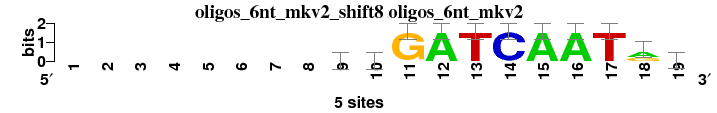 |
|
|
|
|
|
|
|
|
|
|
|
|
|
|
|
|
; oligos_6nt_mkv2; m=0 (reference); ncol1=11; shift=8; ncol=19; --------taGATCAATrw
; Alignment reference
a 0 0 0 0 0 0 0 0 1 2 0 5 0 0 5 5 0 3 2
c 0 0 0 0 0 0 0 0 1 1 0 0 0 5 0 0 0 0 0
g 0 0 0 0 0 0 0 0 1 1 5 0 0 0 0 0 0 2 1
t 0 0 0 0 0 0 0 0 2 1 0 0 5 0 0 0 5 0 2
|
| 7424_HBP1_f1_HOCOMOCO_v9__shift13 (7424_HBP1_f1_HOCOMOCO_v9_) |
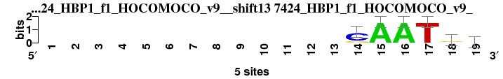 |
0.939 |
0.433 |
6.895 |
0.434 |
0.925 |
0.400 |
0.967 |
1 |
20 |
19 |
13 |
2 |
1 |
1 |
8.143 |
1 |
; oligos_6nt_mkv2 versus 7424_HBP1_f1_HOCOMOCO_v9_; m=1/35; ncol2=8; w=6; offset=5; strand=D; shift=13; score= 8.1429; -------------CAATgr
; cor=0.939; Ncor=0.433; logoDP=6.895; NIcor=0.434; NsEucl=0.925; SSD=0.400; NSW=0.967; rcor=1; rNcor=20; rlogoDP=19; rNIcor=13; rNsEucl=2; rSSD=1; rNSW=1; rank_mean=8.143; match_rank=1
a 0 0 0 0 0 0 0 0 0 0 0 0 0 0 5 5 0 1 2
c 0 0 0 0 0 0 0 0 0 0 0 0 0 4 0 0 0 1 0
g 0 0 0 0 0 0 0 0 0 0 0 0 0 1 0 0 0 3 2
t 0 0 0 0 0 0 0 0 0 0 0 0 0 0 0 0 5 0 1
|
| 6530_3a01_E_3D-footprint_20130124__shift13 (6530_3a01_E_3D-footprint_20130124_) |
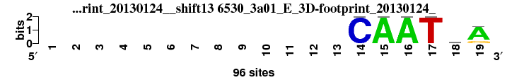 |
0.896 |
0.489 |
7.801 |
0.504 |
0.901 |
0.712 |
0.941 |
6 |
13 |
11 |
10 |
15 |
3 |
6 |
9.143 |
2 |
; oligos_6nt_mkv2 versus 6530_3a01_E_3D-footprint_20130124_; m=2/35; ncol2=6; w=6; offset=5; strand=D; shift=13; score= 9.1429; -------------CAATtA
; cor=0.896; Ncor=0.489; logoDP=7.801; NIcor=0.504; NsEucl=0.901; SSD=0.712; NSW=0.941; rcor=6; rNcor=13; rlogoDP=11; rNIcor=10; rNsEucl=15; rSSD=3; rNSW=6; rank_mean=9.143; match_rank=2
a 0 0 0 0 0 0 0 0 0 0 0 0 0 0 96 96 0 20 77
c 0 0 0 0 0 0 0 0 0 0 0 0 0 96 0 0 0 19 0
g 0 0 0 0 0 0 0 0 0 0 0 0 0 0 0 0 0 19 19
t 0 0 0 0 0 0 0 0 0 0 0 0 0 0 0 0 96 38 0
|
| 5763_SOX15_full_2_HumanTF_1.0__shift11 (5763_SOX15_full_2_HumanTF_1.0_) |
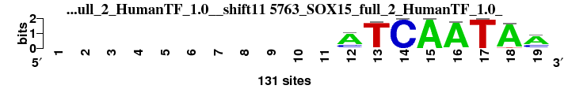 |
0.925 |
0.411 |
10.378 |
0.414 |
0.924 |
0.730 |
0.954 |
3 |
29 |
2 |
21 |
3 |
4 |
3 |
9.286 |
3 |
; oligos_6nt_mkv2 versus 5763_SOX15_full_2_HumanTF_1.0_; m=3/35; ncol2=15; w=8; offset=3; strand=D; shift=11; score= 9.2857; -----------ATCAATAm
; cor=0.925; Ncor=0.411; logoDP=10.378; NIcor=0.414; NsEucl=0.924; SSD=0.730; NSW=0.954; rcor=3; rNcor=29; rlogoDP=2; rNIcor=21; rNsEucl=3; rSSD=4; rNSW=3; rank_mean=9.286; match_rank=3
a 0 0 0 0 0 0 0 0 0 0 0 88 0 0 88 88 0 88 88
c 0 0 0 0 0 0 0 0 0 0 0 28 3 88 0 3 0 0 37
g 0 0 0 0 0 0 0 0 0 0 0 0 0 0 0 0 0 0 0
t 0 0 0 0 0 0 0 0 0 0 0 3 88 0 0 0 88 5 6
|
| 2784_PF0097.1_JASPAR_CORE_2009__rc_shift10 (2784_PF0097.1_JASPAR_CORE_2009__rc) |
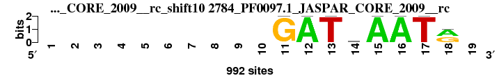 |
0.916 |
0.666 |
7.697 |
0.346 |
0.917 |
0.885 |
0.945 |
5 |
4 |
14 |
28 |
5 |
6 |
5 |
9.571 |
4 |
; oligos_6nt_mkv2 versus 2784_PF0097.1_JASPAR_CORE_2009__rc; m=4/35; ncol2=8; w=8; offset=2; strand=R; shift=10; score= 9.5714; ----------GATrAATr-
; cor=0.916; Ncor=0.666; logoDP=7.697; NIcor=0.346; NsEucl=0.917; SSD=0.885; NSW=0.945; rcor=5; rNcor=4; rlogoDP=14; rNIcor=28; rNsEucl=5; rSSD=6; rNSW=5; rank_mean=9.571; match_rank=4
a 0 0 0 0 0 0 0 0 0 0 0 992 0 360 992 992 0 533 0
c 0 0 0 0 0 0 0 0 0 0 0 0 0 195 0 0 0 0 0
g 0 0 0 0 0 0 0 0 0 0 992 0 0 259 0 0 0 459 0
t 0 0 0 0 0 0 0 0 0 0 0 0 992 178 0 0 992 0 0
|
| 5766_SOX18_full_2_HumanTF_1.0__shift11 (5766_SOX18_full_2_HumanTF_1.0_) |
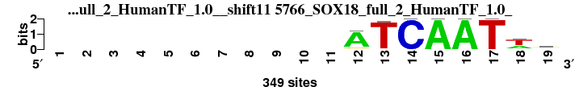 |
0.921 |
0.410 |
10.470 |
0.424 |
0.924 |
0.743 |
0.954 |
4 |
32 |
1 |
17 |
4 |
5 |
4 |
9.571 |
5 |
; oligos_6nt_mkv2 versus 5766_SOX18_full_2_HumanTF_1.0_; m=5/35; ncol2=15; w=8; offset=3; strand=D; shift=11; score= 9.5714; -----------ATCAATwk
; cor=0.921; Ncor=0.410; logoDP=10.470; NIcor=0.424; NsEucl=0.924; SSD=0.743; NSW=0.954; rcor=4; rNcor=32; rlogoDP=1; rNIcor=17; rNsEucl=4; rSSD=5; rNSW=4; rank_mean=9.571; match_rank=5
a 0 0 0 0 0 0 0 0 0 0 0 298 8 0 298 298 0 96 51
c 0 0 0 0 0 0 0 0 0 0 0 14 0 298 0 0 0 7 36
g 0 0 0 0 0 0 0 0 0 0 0 31 0 0 0 0 0 15 132
t 0 0 0 0 0 0 0 0 0 0 0 6 298 0 0 0 298 180 78
|
| 5774_SOX2_DBD_3_HumanTF_1.0__shift10 (5774_SOX2_DBD_3_HumanTF_1.0_) |
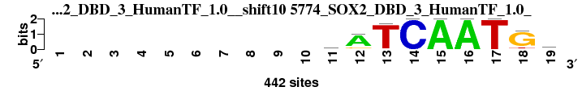 |
0.886 |
0.420 |
10.258 |
0.408 |
0.913 |
1.212 |
0.933 |
7 |
23 |
3 |
22 |
6 |
9 |
7 |
11.000 |
6 |
; oligos_6nt_mkv2 versus 5774_SOX2_DBD_3_HumanTF_1.0_; m=6/35; ncol2=17; w=9; offset=2; strand=D; shift=10; score= 11; ----------rATCAATGk
; cor=0.886; Ncor=0.420; logoDP=10.258; NIcor=0.408; NsEucl=0.913; SSD=1.212; NSW=0.933; rcor=7; rNcor=23; rlogoDP=3; rNIcor=22; rNsEucl=6; rSSD=9; rNSW=7; rank_mean=11.000; match_rank=6
a 0 0 0 0 0 0 0 0 0 0 105 352 7 0 352 352 0 19 49
c 0 0 0 0 0 0 0 0 0 0 62 17 2 352 0 0 0 0 55
g 0 0 0 0 0 0 0 0 0 0 131 56 7 0 0 0 0 296 115
t 0 0 0 0 0 0 0 0 0 0 54 17 352 0 0 0 352 38 132
|
| 1999_PB0144.1_JASPAR_CORE_2009__shift7 (1999_PB0144.1_JASPAR_CORE_2009_) |
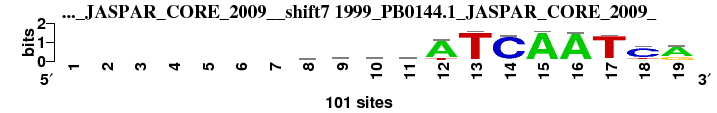 |
0.818 |
0.562 |
7.711 |
0.585 |
0.911 |
1.897 |
0.914 |
15 |
6 |
13 |
4 |
8 |
20 |
12 |
11.143 |
7 |
; oligos_6nt_mkv2 versus 1999_PB0144.1_JASPAR_CORE_2009_; m=7/35; ncol2=16; w=11; offset=-1; strand=D; shift=7; score=11.1429; -------swrsATCAATCr
; cor=0.818; Ncor=0.562; logoDP=7.711; NIcor=0.585; NsEucl=0.911; SSD=1.897; NSW=0.914; rcor=15; rNcor=6; rlogoDP=13; rNIcor=4; rNsEucl=8; rSSD=20; rNSW=12; rank_mean=11.143; match_rank=7
a 0 0 0 0 0 0 0 23 44 42 17 81 4 2 94 93 3 11 68
c 0 0 0 0 0 0 0 27 8 14 34 2 1 90 1 1 2 71 2
g 0 0 0 0 0 0 0 39 23 32 39 1 1 4 1 4 5 1 28
t 0 0 0 0 0 0 0 11 25 12 10 16 94 4 4 2 91 17 3
|
| 5829_Sox3_DBD_2_HumanTF_1.0__shift10 (5829_Sox3_DBD_2_HumanTF_1.0_) |
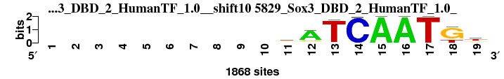 |
0.884 |
0.419 |
10.178 |
0.419 |
0.913 |
1.236 |
0.931 |
8 |
24 |
4 |
18 |
7 |
10 |
8 |
11.286 |
8 |
; oligos_6nt_mkv2 versus 5829_Sox3_DBD_2_HumanTF_1.0_; m=8/35; ncol2=17; w=9; offset=2; strand=D; shift=10; score=11.2857; ----------sATCAATGt
; cor=0.884; Ncor=0.419; logoDP=10.178; NIcor=0.419; NsEucl=0.913; SSD=1.236; NSW=0.931; rcor=8; rNcor=24; rlogoDP=4; rNIcor=18; rNsEucl=7; rSSD=10; rNSW=8; rank_mean=11.286; match_rank=8
a 0 0 0 0 0 0 0 0 0 0 113 1477 54 0 1477 1477 0 0 103
c 0 0 0 0 0 0 0 0 0 0 459 96 1 1477 0 0 1 0 226
g 0 0 0 0 0 0 0 0 0 0 623 197 7 2 1 1 0 1116 352
t 0 0 0 0 0 0 0 0 0 0 282 98 1477 10 0 0 1477 361 796
|
| 5048_ZmHOX2a_2__Athamap_20091028__rc_shift8 (5048_ZmHOX2a_2__Athamap_20091028__rc) |
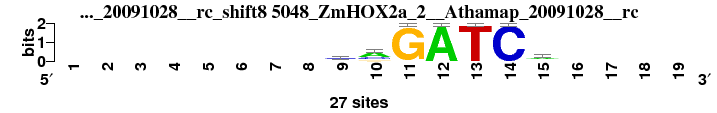 |
0.926 |
0.589 |
0.139 |
-0.157 |
0.926 |
0.543 |
0.961 |
2 |
5 |
34 |
33 |
1 |
2 |
2 |
11.286 |
9 |
; oligos_6nt_mkv2 versus 5048_ZmHOX2a_2__Athamap_20091028__rc; m=9/35; ncol2=7; w=7; offset=0; strand=R; shift=8; score=11.2857; --------cmGATCa----
; cor=0.926; Ncor=0.589; logoDP=0.139; NIcor=-0.157; NsEucl=0.926; SSD=0.543; NSW=0.961; rcor=2; rNcor=5; rlogoDP=34; rNIcor=33; rNsEucl=1; rSSD=2; rNSW=2; rank_mean=11.286; match_rank=9
a 0 0 0 0 0 0 0 0 6 16 0 27 0 0 15 0 0 0 0
c 0 0 0 0 0 0 0 0 14 7 0 0 0 27 5 0 0 0 0
g 0 0 0 0 0 0 0 0 4 4 27 0 0 0 2 0 0 0 0
t 0 0 0 0 0 0 0 0 3 0 0 0 27 0 5 0 0 0 0
|
| 2042_PB0188.1_JASPAR_CORE_2009__shift7 (2042_PB0188.1_JASPAR_CORE_2009_) |
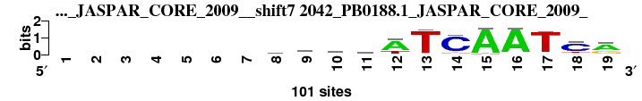 |
0.814 |
0.559 |
7.045 |
0.586 |
0.911 |
1.923 |
0.913 |
16 |
7 |
18 |
3 |
9 |
21 |
13 |
12.429 |
10 |
; oligos_6nt_mkv2 versus 2042_PB0188.1_JASPAR_CORE_2009_; m=10/35; ncol2=16; w=11; offset=-1; strand=D; shift=7; score=12.4286; -------sdrsWTCAATCr
; cor=0.814; Ncor=0.559; logoDP=7.045; NIcor=0.586; NsEucl=0.911; SSD=1.923; NSW=0.913; rcor=16; rNcor=7; rlogoDP=18; rNIcor=3; rNsEucl=9; rSSD=21; rNSW=13; rank_mean=12.429; match_rank=10
a 0 0 0 0 0 0 0 22 34 40 24 70 5 2 93 93 3 12 59
c 0 0 0 0 0 0 0 30 5 16 26 3 2 85 1 1 2 69 2
g 0 0 0 0 0 0 0 37 34 35 39 1 1 6 1 3 5 1 36
t 0 0 0 0 0 0 0 12 27 10 10 26 92 7 5 2 90 18 4
|
| 5197_CUX1_DBD_3_HumanTF_1.0__shift9 (5197_CUX1_DBD_3_HumanTF_1.0_) |
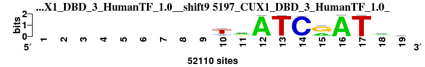 |
0.792 |
0.720 |
9.238 |
0.710 |
0.896 |
2.148 |
0.893 |
20 |
1 |
6 |
1 |
18 |
28 |
21 |
13.571 |
11 |
; oligos_6nt_mkv2 versus 5197_CUX1_DBD_3_HumanTF_1.0_; m=11/35; ncol2=10; w=10; offset=1; strand=D; shift=9; score=13.5714; ---------TrATCrATam
; cor=0.792; Ncor=0.720; logoDP=9.238; NIcor=0.710; NsEucl=0.896; SSD=2.148; NSW=0.893; rcor=20; rNcor=1; rlogoDP=6; rNIcor=1; rNsEucl=18; rSSD=28; rNSW=21; rank_mean=13.571; match_rank=11
a 0 0 0 0 0 0 0 0 0 4099 25659 25659 71 51 9580 25659 150 25659 8168
c 0 0 0 0 0 0 0 0 0 4649 3296 109 294 25659 264 45 95 9420 7633
g 0 0 0 0 0 0 0 0 0 2401 15550 192 77 53 16079 85 29 7560 3958
t 0 0 0 0 0 0 0 0 0 25659 7605 167 25659 595 130 231 25659 7079 5900
|
| 5776_SOX2_full_2_HumanTF_1.0__rc_shift10 (5776_SOX2_full_2_HumanTF_1.0__rc) |
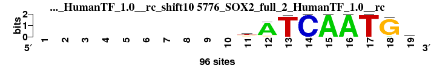 |
0.870 |
0.412 |
9.016 |
0.406 |
0.907 |
1.399 |
0.922 |
9 |
28 |
7 |
23 |
10 |
13 |
9 |
14.143 |
12 |
; oligos_6nt_mkv2 versus 5776_SOX2_full_2_HumanTF_1.0__rc; m=12/35; ncol2=17; w=9; offset=2; strand=R; shift=10; score=14.1429; ----------kATCAATGk
; cor=0.870; Ncor=0.412; logoDP=9.016; NIcor=0.406; NsEucl=0.907; SSD=1.399; NSW=0.922; rcor=9; rNcor=28; rlogoDP=7; rNIcor=23; rNsEucl=10; rSSD=13; rNSW=9; rank_mean=14.143; match_rank=12
a 0 0 0 0 0 0 0 0 0 0 17 85 1 0 85 85 0 4 11
c 0 0 0 0 0 0 0 0 0 0 3 4 0 85 0 0 0 0 14
g 0 0 0 0 0 0 0 0 0 0 29 6 0 0 0 0 0 85 25
t 0 0 0 0 0 0 0 0 0 0 36 1 85 0 0 0 85 0 35
|
| 2653_MA0434.1_JASPAR_CORE_2009__shift6 (2653_MA0434.1_JASPAR_CORE_2009_) |
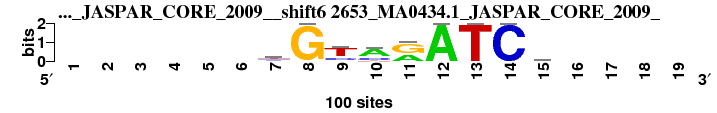 |
0.845 |
0.455 |
6.405 |
0.438 |
0.894 |
1.100 |
0.921 |
13 |
16 |
22 |
12 |
19 |
8 |
10 |
14.286 |
13 |
; oligos_6nt_mkv2 versus 2653_MA0434.1_JASPAR_CORE_2009_; m=13/35; ncol2=9; w=7; offset=-2; strand=D; shift=6; score=14.2857; ------yGymrATCm----
; cor=0.845; Ncor=0.455; logoDP=6.405; NIcor=0.438; NsEucl=0.894; SSD=1.100; NSW=0.921; rcor=13; rNcor=16; rlogoDP=22; rNIcor=12; rNsEucl=19; rSSD=8; rNSW=10; rank_mean=14.286; match_rank=13
a 0 0 0 0 0 0 11 0 9 63 40 100 0 0 36 0 0 0 0
c 0 0 0 0 0 0 36 0 26 26 0 0 0 100 30 0 0 0 0
g 0 0 0 0 0 0 11 100 0 0 60 0 0 0 17 0 0 0 0
t 0 0 0 0 0 0 41 0 65 11 0 0 100 0 17 0 0 0 0
|
| 5199_CUX2_DBD_2_HumanTF_1.0__shift9 (5199_CUX2_DBD_2_HumanTF_1.0_) |
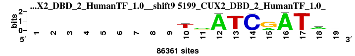 |
0.768 |
0.698 |
8.936 |
0.681 |
0.890 |
2.407 |
0.880 |
26 |
2 |
8 |
2 |
21 |
33 |
27 |
17.000 |
14 |
; oligos_6nt_mkv2 versus 5199_CUX2_DBD_2_HumanTF_1.0_; m=14/35; ncol2=10; w=10; offset=1; strand=D; shift=9; score= 17; ---------TrATCRATaa
; cor=0.768; Ncor=0.698; logoDP=8.936; NIcor=0.681; NsEucl=0.890; SSD=2.407; NSW=0.880; rcor=26; rNcor=2; rlogoDP=8; rNIcor=2; rNsEucl=21; rSSD=33; rNSW=27; rank_mean=17.000; match_rank=14
a 0 0 0 0 0 0 0 0 0 8111 45569 45569 479 74 13767 45569 396 45569 19809
c 0 0 0 0 0 0 0 0 0 4573 5067 250 1841 45569 208 69 278 11730 9534
g 0 0 0 0 0 0 0 0 0 4247 23534 540 485 94 31803 163 66 7587 5056
t 0 0 0 0 0 0 0 0 0 45569 12191 345 45569 736 395 191 45569 12097 11171
|
| 1000_UP00185_UniPROBE_20120919__shift5 (1000_UP00185_UniPROBE_20120919_) |
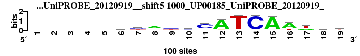 |
0.780 |
0.505 |
6.380 |
0.516 |
0.904 |
2.227 |
0.899 |
21 |
10 |
23 |
8 |
13 |
29 |
18 |
17.429 |
15 |
; oligos_6nt_mkv2 versus 1000_UP00185_UniPROBE_20120919_; m=15/35; ncol2=17; w=11; offset=-3; strand=D; shift=5; score=17.4286; -----yyaymCATCAAwmw
; cor=0.780; Ncor=0.505; logoDP=6.380; NIcor=0.516; NsEucl=0.904; SSD=2.227; NSW=0.899; rcor=21; rNcor=10; rlogoDP=23; rNIcor=8; rNsEucl=13; rSSD=29; rNSW=18; rank_mean=17.429; match_rank=15
a 0 0 0 0 0 21 6 59 12 37 11 86 3 3 93 74 31 32 39
c 0 0 0 0 0 28 50 4 40 39 73 2 1 95 3 6 5 32 14
g 0 0 0 0 0 15 15 14 9 11 9 7 1 1 2 3 6 15 9
t 0 0 0 0 0 36 29 23 39 13 7 5 95 1 2 17 58 21 38
|
| 2984_PH0134.1_JASPAR_CORE_2009__shift5 (2984_PH0134.1_JASPAR_CORE_2009_) |
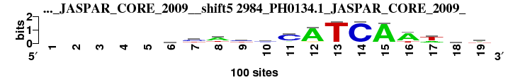 |
0.780 |
0.505 |
6.380 |
0.516 |
0.904 |
2.227 |
0.899 |
21 |
10 |
23 |
8 |
13 |
29 |
18 |
17.429 |
16 |
; oligos_6nt_mkv2 versus 2984_PH0134.1_JASPAR_CORE_2009_; m=16/35; ncol2=17; w=11; offset=-3; strand=D; shift=5; score=17.4286; -----yyaymCATCAAwmw
; cor=0.780; Ncor=0.505; logoDP=6.380; NIcor=0.516; NsEucl=0.904; SSD=2.227; NSW=0.899; rcor=21; rNcor=10; rlogoDP=23; rNIcor=8; rNsEucl=13; rSSD=29; rNSW=18; rank_mean=17.429; match_rank=16
a 0 0 0 0 0 21 6 59 12 37 11 86 3 3 93 74 31 32 39
c 0 0 0 0 0 28 49 3 40 39 73 2 1 95 3 6 5 32 14
g 0 0 0 0 0 15 15 14 9 11 9 7 1 1 2 3 6 15 9
t 0 0 0 0 0 36 29 23 39 13 7 5 95 1 2 17 58 21 38
|
| 5195_CUX1_DBD_1_HumanTF_1.0__shift0 (5195_CUX1_DBD_1_HumanTF_1.0_) |
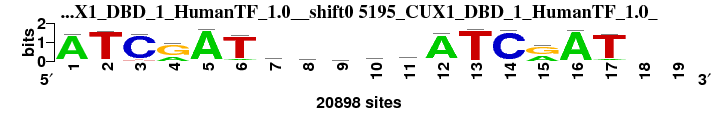 |
0.854 |
0.405 |
7.521 |
0.397 |
0.905 |
1.447 |
0.920 |
11 |
34 |
16 |
25 |
12 |
15 |
11 |
17.714 |
17 |
; oligos_6nt_mkv2 versus 5195_CUX1_DBD_1_HumanTF_1.0_; m=17/35; ncol2=17; w=9; offset=-8; strand=D; shift=0; score=17.7143; ATCrATmmstrATCrAT--
; cor=0.854; Ncor=0.405; logoDP=7.521; NIcor=0.397; NsEucl=0.905; SSD=1.447; NSW=0.920; rcor=11; rNcor=34; rlogoDP=16; rNIcor=25; rNsEucl=12; rSSD=15; rNSW=11; rank_mean=17.714; match_rank=17
a 18540 327 448 5977 18540 1598 7788 7150 4224 3402 6466 18540 245 353 7775 18540 1425 0 0
c 217 549 18540 268 196 565 4732 5224 6088 3307 1417 217 338 18540 308 198 414 0 0
g 645 252 307 12562 221 195 2182 3370 4885 3606 6842 639 184 235 10764 246 165 0 0
t 948 18540 1083 219 332 18540 3837 2796 3344 8224 3814 793 18540 371 196 478 18540 0 0
|
| 2329_CN0166.1_JASPAR_CORE_2009__shift2 (2329_CN0166.1_JASPAR_CORE_2009_) |
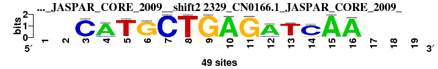 |
0.850 |
0.400 |
8.262 |
0.376 |
0.894 |
1.446 |
0.910 |
12 |
35 |
9 |
27 |
20 |
14 |
14 |
18.714 |
18 |
; oligos_6nt_mkv2 versus 2329_CN0166.1_JASPAR_CORE_2009_; m=18/35; ncol2=14; w=8; offset=-6; strand=D; shift=2; score=18.7143; --CATGCTGAGATCAA---
; cor=0.850; Ncor=0.400; logoDP=8.262; NIcor=0.376; NsEucl=0.894; SSD=1.446; NSW=0.910; rcor=12; rNcor=35; rlogoDP=9; rNIcor=27; rNsEucl=20; rSSD=14; rNSW=14; rank_mean=18.714; match_rank=18
a 0 0 2 42 2 2 0 0 0 48 1 41 2 3 49 47 0 0 0
c 0 0 46 5 0 1 49 0 0 0 0 5 2 40 0 0 0 0 0
g 0 0 0 0 1 45 0 0 49 1 48 0 2 6 0 0 0 0 0
t 0 0 1 2 46 1 0 49 0 0 0 3 43 0 0 2 0 0 0
|
| 6138_1j5n_A_3D-footprint_20130124__shift11 (6138_1j5n_A_3D-footprint_20130124_) |
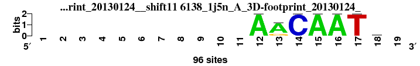 |
0.773 |
0.492 |
9.628 |
0.518 |
0.855 |
2.048 |
0.854 |
24 |
12 |
5 |
7 |
31 |
25 |
31 |
19.286 |
19 |
; oligos_6nt_mkv2 versus 6138_1j5n_A_3D-footprint_20130124_; m=19/35; ncol2=7; w=7; offset=3; strand=D; shift=11; score=19.2857; -----------AACAATc-
; cor=0.773; Ncor=0.492; logoDP=9.628; NIcor=0.518; NsEucl=0.855; SSD=2.048; NSW=0.854; rcor=24; rNcor=12; rlogoDP=5; rNIcor=7; rNsEucl=31; rSSD=25; rNSW=31; rank_mean=19.286; match_rank=19
a 0 0 0 0 0 0 0 0 0 0 0 96 76 0 96 96 0 19 0
c 0 0 0 0 0 0 0 0 0 0 0 0 0 96 0 0 0 38 0
g 0 0 0 0 0 0 0 0 0 0 0 0 19 0 0 0 0 19 0
t 0 0 0 0 0 0 0 0 0 0 0 0 1 0 0 0 96 20 0
|
| 3788_UP00091_UniPROBE_20120919__shift6 (3788_UP00091_UniPROBE_20120919_) |
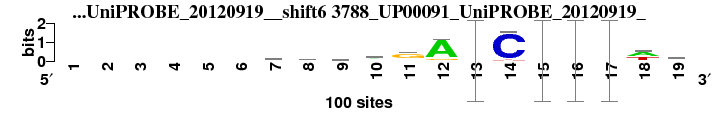 |
0.753 |
0.517 |
7.714 |
0.528 |
0.897 |
2.556 |
0.884 |
32 |
8 |
12 |
5 |
17 |
35 |
26 |
19.286 |
20 |
; oligos_6nt_mkv2 versus 3788_UP00091_UniPROBE_20120919_; m=20/35; ncol2=16; w=11; offset=-2; strand=D; shift=6; score=19.2857; ------wwdrgAACAATwa
; cor=0.753; Ncor=0.517; logoDP=7.714; NIcor=0.528; NsEucl=0.897; SSD=2.556; NSW=0.884; rcor=32; rNcor=8; rlogoDP=12; rNIcor=5; rNsEucl=17; rSSD=35; rNSW=26; rank_mean=19.286; match_rank=20
a 0 0 0 0 0 0 31 26 26 45 15 83 0.98 1 0.97 0.97 0.03 49 45
c 0 0 0 0 0 0 13 20 12 9 9 3 0 93 0 0 0.01 2 10
g 0 0 0 0 0 0 17 14 26 29 63 13 0.01 1 0.01 0.01 0 8 24
t 0 0 0 0 0 0 39 40 36 17 13 1 0.01 5 0.02 0.01 0.95 41 21
|
| 2682_PB0072.1_JASPAR_CORE_2009__shift6 (2682_PB0072.1_JASPAR_CORE_2009_) |
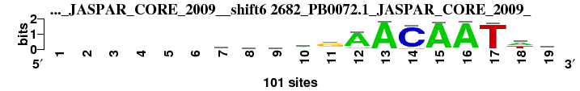 |
0.753 |
0.517 |
7.665 |
0.527 |
0.897 |
2.555 |
0.884 |
33 |
9 |
15 |
6 |
16 |
34 |
25 |
19.714 |
21 |
; oligos_6nt_mkv2 versus 2682_PB0072.1_JASPAR_CORE_2009_; m=21/35; ncol2=16; w=11; offset=-2; strand=D; shift=6; score=19.7143; ------wwdrgAACAATwa
; cor=0.753; Ncor=0.517; logoDP=7.665; NIcor=0.527; NsEucl=0.897; SSD=2.555; NSW=0.884; rcor=33; rNcor=9; rlogoDP=15; rNIcor=6; rNsEucl=16; rSSD=34; rNSW=25; rank_mean=19.714; match_rank=21
a 0 0 0 0 0 0 31 26 26 45 15 83 98 1 97 97 3 49 45
c 0 0 0 0 0 0 13 20 12 9 9 3 0 94 0 0 1 2 10
g 0 0 0 0 0 0 17 15 26 29 63 13 1 1 1 1 0 9 24
t 0 0 0 0 0 0 39 40 36 17 13 2 1 5 2 1 95 41 20
|
| 7440_HNF6_f1_HOCOMOCO_v9__rc_shift6 (7440_HNF6_f1_HOCOMOCO_v9__rc) |
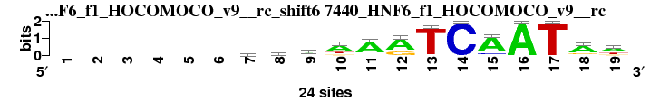 |
0.805 |
0.681 |
0.872 |
-0.173 |
0.907 |
2.093 |
0.905 |
17 |
3 |
30 |
35 |
11 |
26 |
16 |
19.714 |
22 |
; oligos_6nt_mkv2 versus 7440_HNF6_f1_HOCOMOCO_v9__rc; m=22/35; ncol2=13; w=11; offset=-2; strand=R; shift=6; score=19.7143; ------whwaARTCAATAw
; cor=0.805; Ncor=0.681; logoDP=0.872; NIcor=-0.173; NsEucl=0.907; SSD=2.093; NSW=0.905; rcor=17; rNcor=3; rlogoDP=30; rNIcor=35; rNsEucl=11; rSSD=26; rNSW=16; rank_mean=19.714; match_rank=22
a 0 0 0 0 0 0 9 9 11 16 19 17 0 0 20 24 0 17 13
c 0 0 0 0 0 0 3 7 2 0 2 0 1 24 3 0 0 1 0
g 0 0 0 0 0 0 5 2 3 3 1 7 0 0 1 0 0 4 4
t 0 0 0 0 0 0 7 6 8 5 2 0 23 0 0 0 24 2 7
|
| 7627_SOX10_si_HOCOMOCO_v9__shift13 (7627_SOX10_si_HOCOMOCO_v9_) |
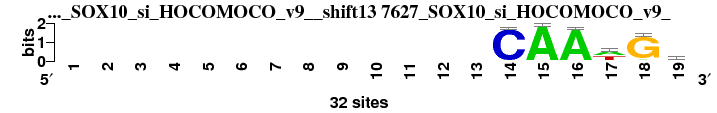 |
0.801 |
0.437 |
5.845 |
0.418 |
0.867 |
1.269 |
0.894 |
19 |
19 |
27 |
19 |
28 |
11 |
20 |
20.429 |
23 |
; oligos_6nt_mkv2 versus 7627_SOX10_si_HOCOMOCO_v9_; m=23/35; ncol2=6; w=6; offset=5; strand=D; shift=13; score=20.4286; -------------CAAwGr
; cor=0.801; Ncor=0.437; logoDP=5.845; NIcor=0.418; NsEucl=0.867; SSD=1.269; NSW=0.894; rcor=19; rNcor=19; rlogoDP=27; rNIcor=19; rNsEucl=28; rSSD=11; rNSW=20; rank_mean=20.429; match_rank=23
a 0 0 0 0 0 0 0 0 0 0 0 0 0 0 32 31 15 2 13
c 0 0 0 0 0 0 0 0 0 0 0 0 0 31 0 0 0 0 7
g 0 0 0 0 0 0 0 0 0 0 0 0 0 0 0 0 3 29 10
t 0 0 0 0 0 0 0 0 0 0 0 0 0 1 0 1 14 1 2
|
| 6753_6gat_A_3D-footprint_20130124__shift9 (6753_6gat_A_3D-footprint_20130124_) |
 |
0.803 |
0.438 |
4.707 |
0.416 |
0.863 |
1.346 |
0.888 |
18 |
18 |
28 |
20 |
29 |
12 |
23 |
21.143 |
24 |
; oligos_6nt_mkv2 versus 6753_6gat_A_3D-footprint_20130124_; m=24/35; ncol2=6; w=6; offset=1; strand=D; shift=9; score=21.1429; ---------CnATCA----
; cor=0.803; Ncor=0.438; logoDP=4.707; NIcor=0.416; NsEucl=0.863; SSD=1.346; NSW=0.888; rcor=18; rNcor=18; rlogoDP=28; rNIcor=20; rNsEucl=29; rSSD=12; rNSW=23; rank_mean=21.143; match_rank=24
a 0 0 0 0 0 0 0 0 0 11 24 67 9 0 96 0 0 0 0
c 0 0 0 0 0 0 0 0 0 67 24 9 11 96 0 0 0 0 0
g 0 0 0 0 0 0 0 0 0 9 24 11 9 0 0 0 0 0 0
t 0 0 0 0 0 0 0 0 0 9 24 9 67 0 0 0 0 0 0
|
| 3061_FNR_RegulonDB_7.5__rc_shift2 (3061_FNR_RegulonDB_7.5__rc) |
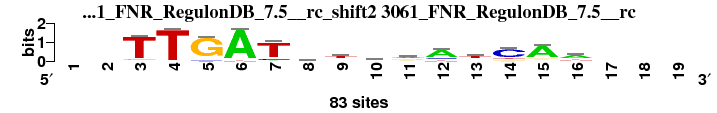 |
0.863 |
0.406 |
6.281 |
0.405 |
0.889 |
1.568 |
0.902 |
10 |
33 |
26 |
24 |
22 |
17 |
17 |
21.286 |
25 |
; oligos_6nt_mkv2 versus 3061_FNR_RegulonDB_7.5__rc; m=25/35; ncol2=14; w=8; offset=-6; strand=R; shift=2; score=21.2857; --TTGATrtwrAtCAa---
; cor=0.863; Ncor=0.406; logoDP=6.281; NIcor=0.405; NsEucl=0.889; SSD=1.568; NSW=0.902; rcor=10; rNcor=33; rlogoDP=26; rNIcor=24; rNsEucl=22; rSSD=17; rNSW=17; rank_mean=21.286; match_rank=25
a 0 0 2 2 6 79 6 29 12 29 35 57 14 2 64 48 0 0 0
c 0 0 0 0 5 0 11 11 11 16 3 13 8 58 6 10 0 0 0
g 0 0 8 1 72 0 0 23 12 10 28 3 14 10 8 8 0 0 0
t 0 0 73 80 0 4 66 20 48 28 17 10 47 13 5 17 0 0 0
|
| 1741_MA0182.1_JASPAR_CORE_2009__rc_shift13 (1741_MA0182.1_JASPAR_CORE_2009__rc) |
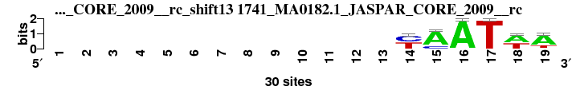 |
0.826 |
0.413 |
0.779 |
-0.103 |
0.877 |
1.096 |
0.909 |
14 |
27 |
32 |
31 |
25 |
7 |
15 |
21.571 |
26 |
; oligos_6nt_mkv2 versus 1741_MA0182.1_JASPAR_CORE_2009__rc; m=26/35; ncol2=7; w=6; offset=5; strand=R; shift=13; score=21.5714; -------------yAATwA
; cor=0.826; Ncor=0.413; logoDP=0.779; NIcor=-0.103; NsEucl=0.877; SSD=1.096; NSW=0.909; rcor=14; rNcor=27; rlogoDP=32; rNIcor=31; rNsEucl=25; rSSD=7; rNSW=15; rank_mean=21.571; match_rank=26
a 0 0 0 0 0 0 0 0 0 0 0 0 0 0 24 30 0 17 22
c 0 0 0 0 0 0 0 0 0 0 0 0 0 15 6 0 0 0 0
g 0 0 0 0 0 0 0 0 0 0 0 0 0 0 0 0 0 0 1
t 0 0 0 0 0 0 0 0 0 0 0 0 0 15 0 0 30 13 7
|
| 7634_SOX5_f1_HOCOMOCO_v9__shift11 (7634_SOX5_f1_HOCOMOCO_v9_) |
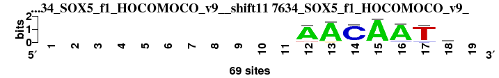 |
0.767 |
0.488 |
6.350 |
0.491 |
0.857 |
2.004 |
0.857 |
27 |
14 |
25 |
11 |
30 |
24 |
30 |
23.000 |
27 |
; oligos_6nt_mkv2 versus 7634_SOX5_f1_HOCOMOCO_v9_; m=27/35; ncol2=7; w=7; offset=3; strand=D; shift=11; score= 23; -----------AACAATr-
; cor=0.767; Ncor=0.488; logoDP=6.350; NIcor=0.491; NsEucl=0.857; SSD=2.004; NSW=0.857; rcor=27; rNcor=14; rlogoDP=25; rNIcor=11; rNsEucl=30; rSSD=24; rNSW=30; rank_mean=23.000; match_rank=27
a 0 0 0 0 0 0 0 0 0 0 0 61 64 2 67 62 5 27 0
c 0 0 0 0 0 0 0 0 0 0 0 1 0 62 0 5 4 11 0
g 0 0 0 0 0 0 0 0 0 0 0 3 4 2 1 2 0 22 0
t 0 0 0 0 0 0 0 0 0 0 0 4 1 3 1 0 60 9 0
|
| 3893_UP00198_UniPROBE_20120919__shift3 (3893_UP00198_UniPROBE_20120919_) |
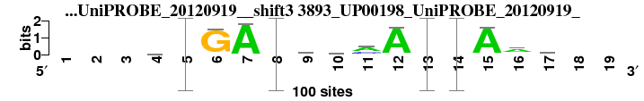 |
0.761 |
0.428 |
6.819 |
0.429 |
0.882 |
2.237 |
0.876 |
28 |
21 |
20 |
15 |
23 |
31 |
28 |
23.714 |
28 |
; oligos_6nt_mkv2 versus 3893_UP00198_UniPROBE_20120919_; m=28/35; ncol2=14; w=9; offset=-5; strand=D; shift=3; score=23.7143; ---rTGATssmATCAaw--
; cor=0.761; Ncor=0.428; logoDP=6.819; NIcor=0.429; NsEucl=0.882; SSD=2.237; NSW=0.876; rcor=28; rNcor=21; rlogoDP=20; rNIcor=15; rNsEucl=23; rSSD=31; rNSW=28; rank_mean=23.714; match_rank=28
a 0 0 0 34 0.03 4 98 0.04 10 22 54 95 0.01 0 95 61 36 0 0
c 0 0 0 18 0 2 1 0 37 28 34 3 0.01 0.97 1 14 21 0 0
g 0 0 0 26 0 93 1 0.06 29 35 8 1 0 0 1 15 10 0 0
t 0 0 0 22 0.96 1 0 0.90 24 15 4 1 0.99 0.02 3 10 33 0 0
|
| 2872_PH0014.1_JASPAR_CORE_2009__shift3 (2872_PH0014.1_JASPAR_CORE_2009_) |
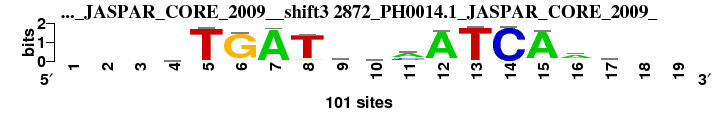 |
0.761 |
0.428 |
6.819 |
0.429 |
0.882 |
2.237 |
0.876 |
28 |
21 |
20 |
15 |
23 |
31 |
28 |
23.714 |
29 |
; oligos_6nt_mkv2 versus 2872_PH0014.1_JASPAR_CORE_2009_; m=29/35; ncol2=14; w=9; offset=-5; strand=D; shift=3; score=23.7143; ---rTGATssmATCAaw--
; cor=0.761; Ncor=0.428; logoDP=6.819; NIcor=0.429; NsEucl=0.882; SSD=2.237; NSW=0.876; rcor=28; rNcor=21; rlogoDP=20; rNIcor=15; rNsEucl=23; rSSD=31; rNSW=28; rank_mean=23.714; match_rank=29
a 0 0 0 34 3 4 98 4 10 22 54 95 1 0 95 61 36 0 0
c 0 0 0 18 0 2 1 0 37 28 34 3 1 97 1 14 21 0 0
g 0 0 0 26 0 93 1 6 29 35 8 1 0 0 1 15 10 0 0
t 0 0 0 22 96 1 1 90 24 15 4 1 99 2 3 10 33 0 0
|
| 2619_MA0389.1_JASPAR_CORE_2009__rc_shift7 (2619_MA0389.1_JASPAR_CORE_2009__rc) |
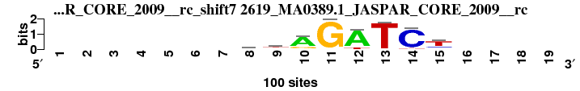 |
0.771 |
0.450 |
0.785 |
-0.004 |
0.872 |
1.616 |
0.885 |
25 |
17 |
31 |
30 |
27 |
18 |
24 |
24.571 |
30 |
; oligos_6nt_mkv2 versus 2619_MA0389.1_JASPAR_CORE_2009__rc; m=30/35; ncol2=8; w=7; offset=-1; strand=R; shift=7; score=24.5714; -------gkAGATCt----
; cor=0.771; Ncor=0.450; logoDP=0.785; NIcor=-0.004; NsEucl=0.872; SSD=1.616; NSW=0.885; rcor=25; rNcor=17; rlogoDP=31; rNIcor=30; rNsEucl=27; rSSD=18; rNSW=24; rank_mean=24.571; match_rank=30
a 0 0 0 0 0 0 0 16 11 74 0 85 3 2 6 0 0 0 0
c 0 0 0 0 0 0 0 18 13 3 0 2 0 90 19 0 0 0 0
g 0 0 0 0 0 0 0 42 30 19 99 0 0 2 9 0 0 0 0
t 0 0 0 0 0 0 0 24 46 4 0 13 97 6 66 0 0 0 0
|
| 2559_MA0301.1_JASPAR_CORE_2009__rc_shift6 (2559_MA0301.1_JASPAR_CORE_2009__rc) |
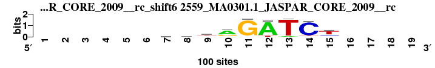 |
0.776 |
0.418 |
0.126 |
-0.106 |
0.874 |
1.545 |
0.890 |
23 |
25 |
35 |
32 |
26 |
16 |
22 |
25.571 |
31 |
; oligos_6nt_mkv2 versus 2559_MA0301.1_JASPAR_CORE_2009__rc; m=31/35; ncol2=9; w=7; offset=-2; strand=R; shift=6; score=25.5714; ------kktrGATCt----
; cor=0.776; Ncor=0.418; logoDP=0.126; NIcor=-0.106; NsEucl=0.874; SSD=1.545; NSW=0.890; rcor=23; rNcor=25; rlogoDP=35; rNIcor=32; rNsEucl=26; rSSD=16; rNSW=22; rank_mean=25.571; match_rank=31
a 0 0 0 0 0 0 21 17 12 63 2 87 8 1 6 0 0 0 0
c 0 0 0 0 0 0 21 21 18 4 1 1 0 88 20 0 0 0 0
g 0 0 0 0 0 0 25 33 19 27 94 0 0 2 9 0 0 0 0
t 0 0 0 0 0 0 32 28 51 6 3 12 92 8 65 0 0 0 0
|
| 7604_RARG_f1_HOCOMOCO_v9__shift9 (7604_RARG_f1_HOCOMOCO_v9_) |
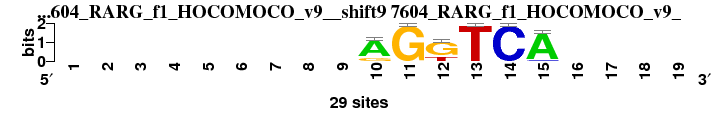 |
0.752 |
0.410 |
7.248 |
0.429 |
0.840 |
1.845 |
0.846 |
34 |
30 |
17 |
14 |
33 |
19 |
33 |
25.714 |
32 |
; oligos_6nt_mkv2 versus 7604_RARG_f1_HOCOMOCO_v9_; m=32/35; ncol2=6; w=6; offset=1; strand=D; shift=9; score=25.7143; ---------AGKTCA----
; cor=0.752; Ncor=0.410; logoDP=7.248; NIcor=0.429; NsEucl=0.840; SSD=1.845; NSW=0.846; rcor=34; rNcor=30; rlogoDP=17; rNIcor=14; rNsEucl=33; rSSD=19; rNSW=33; rank_mean=25.714; match_rank=32
a 0 0 0 0 0 0 0 0 0 23 0 0 0 0 27 0 0 0 0
c 0 0 0 0 0 0 0 0 0 0 0 0 0 29 2 0 0 0 0
g 0 0 0 0 0 0 0 0 0 6 29 21 0 0 0 0 0 0 0
t 0 0 0 0 0 0 0 0 0 0 0 8 29 0 0 0 0 0 0
|
| 2526_MA0151.1_JASPAR_CORE_2009__shift11 (2526_MA0151.1_JASPAR_CORE_2009_) |
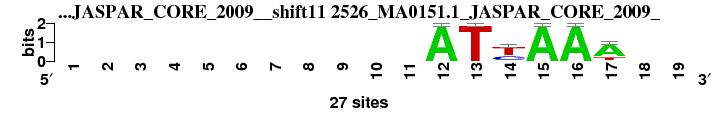 |
0.758 |
0.414 |
8.186 |
0.386 |
0.833 |
1.997 |
0.834 |
31 |
26 |
10 |
26 |
35 |
23 |
35 |
26.571 |
33 |
; oligos_6nt_mkv2 versus 2526_MA0151.1_JASPAR_CORE_2009_; m=33/35; ncol2=6; w=6; offset=3; strand=D; shift=11; score=26.5714; -----------ATyAAA--
; cor=0.758; Ncor=0.414; logoDP=8.186; NIcor=0.386; NsEucl=0.833; SSD=1.997; NSW=0.834; rcor=31; rNcor=26; rlogoDP=10; rNIcor=26; rNsEucl=35; rSSD=23; rNSW=35; rank_mean=26.571; match_rank=33
a 0 0 0 0 0 0 0 0 0 0 0 27 0 1 27 27 20 0 0
c 0 0 0 0 0 0 0 0 0 0 0 0 0 9 0 0 0 0 0
g 0 0 0 0 0 0 0 0 0 0 0 0 0 0 0 0 1 0 0
t 0 0 0 0 0 0 0 0 0 0 0 0 27 17 0 0 6 0 0
|
| 1793_MA0235.1_JASPAR_CORE_2009__rc_shift9 (1793_MA0235.1_JASPAR_CORE_2009__rc) |
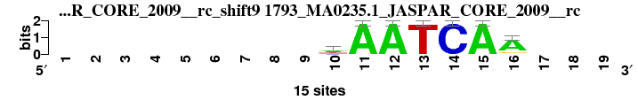 |
0.759 |
0.483 |
0.148 |
-0.170 |
0.853 |
2.124 |
0.848 |
30 |
15 |
33 |
34 |
32 |
27 |
32 |
29.000 |
34 |
; oligos_6nt_mkv2 versus 1793_MA0235.1_JASPAR_CORE_2009__rc; m=34/35; ncol2=7; w=7; offset=1; strand=R; shift=9; score= 29; ---------hAATCAA---
; cor=0.759; Ncor=0.483; logoDP=0.148; NIcor=-0.170; NsEucl=0.853; SSD=2.124; NSW=0.848; rcor=30; rNcor=15; rlogoDP=33; rNIcor=34; rNsEucl=32; rSSD=27; rNSW=32; rank_mean=29.000; match_rank=34
a 0 0 0 0 0 0 0 0 0 6 15 15 0 0 15 12 0 0 0
c 0 0 0 0 0 0 0 0 0 4 0 0 0 15 0 0 0 0 0
g 0 0 0 0 0 0 0 0 0 0 0 0 0 0 0 2 0 0 0
t 0 0 0 0 0 0 0 0 0 5 0 0 15 0 0 1 0 0 0
|
| 2670_MF0011.1_JASPAR_CORE_2009__rc_shift11 (2670_MF0011.1_JASPAR_CORE_2009__rc) |
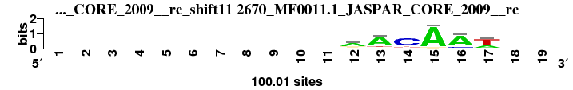 |
0.751 |
0.410 |
1.677 |
0.106 |
0.834 |
1.984 |
0.835 |
35 |
31 |
29 |
29 |
34 |
22 |
34 |
30.571 |
35 |
; oligos_6nt_mkv2 versus 2670_MF0011.1_JASPAR_CORE_2009__rc; m=35/35; ncol2=6; w=6; offset=3; strand=R; shift=11; score=30.5714; -----------aACAAw--
; cor=0.751; Ncor=0.410; logoDP=1.677; NIcor=0.106; NsEucl=0.834; SSD=1.984; NSW=0.835; rcor=35; rNcor=31; rlogoDP=29; rNIcor=29; rNsEucl=34; rSSD=22; rNSW=34; rank_mean=30.571; match_rank=35
a 0 0 0 0 0 0 0 0 0 0 0 61.71 76.2 7.53 92.51 77.94 30.58 0 0
c 0 0 0 0 0 0 0 0 0 0 0 10.7 3.14 74.53 0.92 14.03 0 0 0
g 0 0 0 0 0 0 0 0 0 0 0 17.54 8.38 6.65 4.96 6.34 9 0 0
t 0 0 0 0 0 0 0 0 0 0 0 10.05 12.28 11.29 1.61 1.68 60.43 0 0
|
{kind=link}
{kind=link}
{kind=link}
{kind=link}
{kind=link}
{kind=link}
{kind=link}
{kind=link}
{kind=link}
{kind=link}
{kind=link}
{kind=link}
{kind=link}
{kind=link}
{kind=link}
{kind=link}
{kind=link}
{kind=link}
{kind=link}
{kind=link}
{kind=link}
{kind=link}
{kind=link}
{kind=link}
{kind=link}
{kind=link}
{kind=link}
{kind=link}
{kind=link}
{kind=link}
{kind=link}
{kind=link}
{kind=link}
{kind=link}
{kind=link}